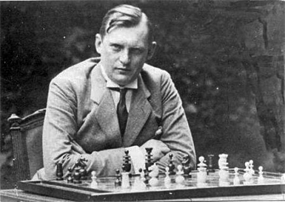

Alexander Alekhine
Alexander Alekhine nasceu em uma família abastada. Seu pai era proprietário de terras e membro da Duma, enquanto sua mãe era filha de um rico industrial. Foi ela quem ensinou Alexander e seu irmão a jogar xadrez, em 1903.
O primeiro grande feito de Alekhine no mundo do xadrez foi em 1909, aos 17 anos, quando venceu o torneio russo de xadrez para amadores em São Petersburgo. Com 12 vitórias, 2 empates e apenas 2 derrotas, ele conquistou o título de mestre nacional. Esse torneio ocorreu paralelamente ao torneio de profissionais, vencido por Emanuel Lasker e Akiba Rubinstein. Nesse mesmo ano, o jovem José Raúl Capablanca, aos 23 anos, surpreendeu ao vencer Frank Marshall nos Estados Unidos.
Em 1914, após o torneio de São Petersburgo, Alekhine e Capablanca estavam entre os cinco primeiros jogadores a receber o título de grandmaster. Alekhine, cosmopolita, viveu em vários países e falava russo, alemão, francês e inglês.
Após a Revolução Russa, foi preso em Odessa em 1919 sob suspeita de espionagem, mas foi libertado pouco depois. Em 1920, venceu o primeiro Campeonato Soviético de Xadrez. Mudou-se para a França em 1921, onde obteve cidadania em 1925 e estudou Direito na Sorbonne. Embora não tenha concluído sua tese sobre o sistema prisional chinês, Alekhine ficou conhecido como Dr. Alekhine pelo resto da vida.
Em 1927, Alekhine venceu Capablanca e tornou-se campeão mundial de xadrez. Apesar de uma revanche estar prevista nas condições do match, Alekhine recusou-se a concedê-la. Em vez disso, jogou dois matches contra Efim Bogolyubov, um adversário de nível inferior a Capablanca, que tinha um histórico de 5-0 contra Bogolyubov. Alekhine evitava até mesmo participar dos mesmos torneios que seu rival.
Em 1935, perdeu o título para Max Euwe, em parte devido ao seu consumo excessivo de álcool. Em 1936, com Alekhine já sem o título de campeão, Capablanca venceu o torneio de Nottingham, superando Alekhine em uma partida direta. Após abandonar o vício, Alekhine reconquistou o título mundial em 1937, derrotando Euwe de forma brilhante e demonstrando novamente sua supremacia no mundo do xadrez.